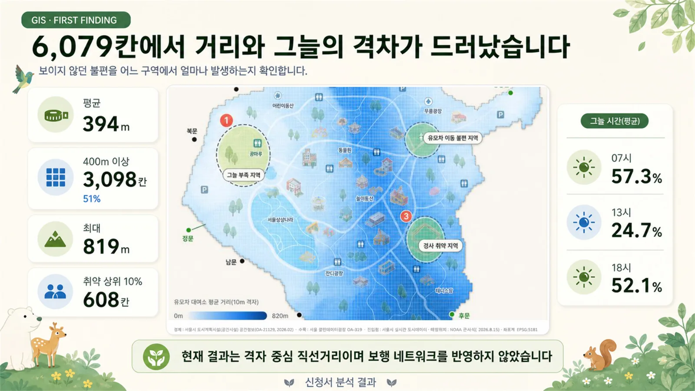
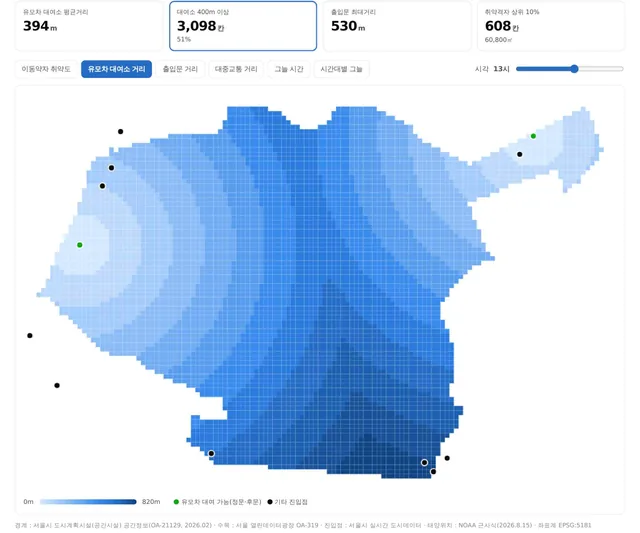
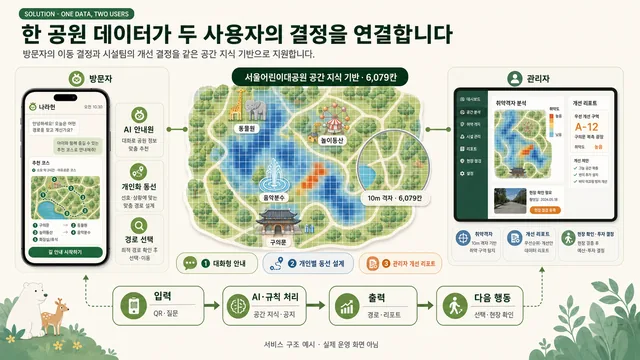
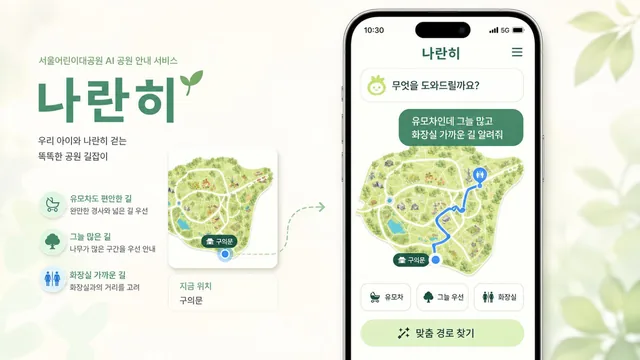
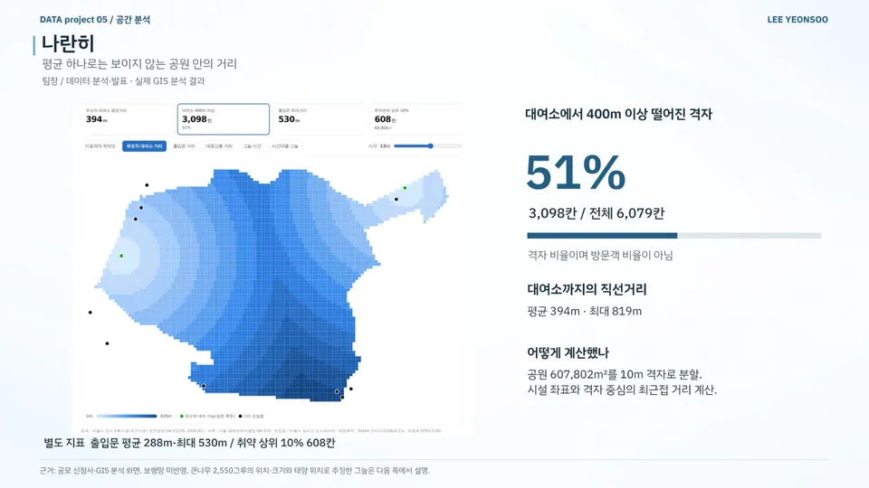
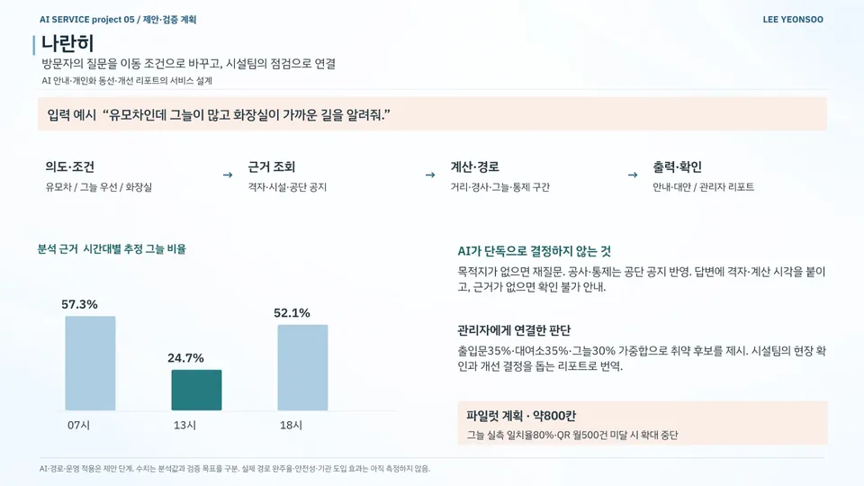
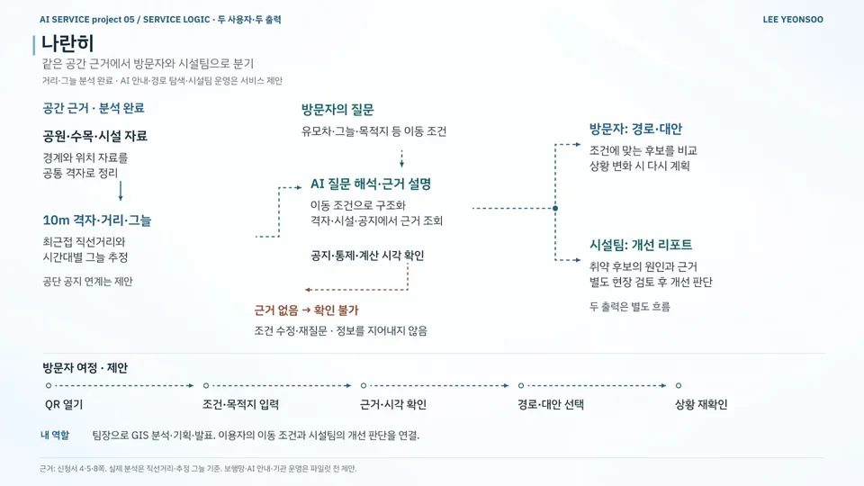

데이터 분석 / AI 서비스 기획 / 공공·정책 / 공원·공공시설
나란히
Naranhi — Park Access and Shade Analysis for Visitors and Facility Teams
10m 격자 분석으로 제안한 공원 이용 안내와 시설 개선 과제
현재 상태거리·그늘 분석 완료 · 안내·경로 탐색·시설 운영은 제안 단계
- 기간
- 2026 (본선 발표 2026.09.09)
- 팀
- 팀 한 칸씩 (3인)
- 내 역할
- 팀장 · GIS 분석·기획·발표
- 도구
- 수상
- 최우수 최우수상
2026 서울어린이대공원 AI기반 서비스 아이디어 공모전
내 기여팀장으로 서비스 방향과 본선 발표를 조율하고 공개 공간데이터로 접근거리·그늘·취약구역 GIS 분석을 맡았습니다. 발표 대본을 다듬고 분석 근거·도입 가치·질의응답을 정리했습니다.
사진·화면


크게 보기
크게 보기GIS 분석 화면: 유모차 대여소까지 10m 격자 거리출처팀 자료 
크게 보기한 공원 데이터로 방문자 안내와 관리자 리포트를 잇는 서비스 구조(예시)출처팀 자료 
크게 보기나란히 앱 시안: 유모차·그늘·화장실 조건에 맞춘 경로출처팀 자료


발표 자료

크게 보기포트폴리오 슬라이드 14쪽 · 본문 내용을 한 장으로 정리한 슬라이드 
크게 보기포트폴리오 슬라이드 15쪽 · 본문 내용을 한 장으로 정리한 슬라이드 
크게 보기포트폴리오 슬라이드 16쪽 · 본문 내용을 한 장으로 정리한 슬라이드


문제
같은 공원도 들어오는 문과 이동 조건(유모차·그늘·화장실)에 따라 필요한 안내가 다릅니다. 공원 전체 평균으로는 이 차이도, 불편이 반복되는 구역을 고칠 근거도 보이지 않았습니다.
접근
- 공원 607,802㎡를 10m 격자 6,079칸으로 나누고, 시설 좌표와 격자 중심의 최근접 직선거리 계산
- 수목 원자료 중 경계 안 큰나무 2,550그루의 위치·크기와 태양 위치로 시간대별 그늘 추정
- 취약 후보 = 출입문 35% · 대여소 35% · 그늘 30% 가중합
- 이동 조건과 격자·시설·공단 공지를 바탕으로 방문자 안내와 시설팀 개선 리포트 설계
핵심 판단
공원 내 거리 편차를 살펴보기 위해 평균과 함께 10m 격자별 거리 계산
목적지 미입력 시 재질문, 공사·통제는 공단 공지 반영, 근거 부족 시 '확인 불가' 안내
개선 결정은 시설팀의 현장 확인에 맡기고, 서비스는 취약 후보의 원인과 근거를 리포트로 전달
그늘 실측 일치율 80%·QR 월 500건 미달을 파일럿 확대 중단 조건으로 설정
결과
- 대여소 400m 이상 격자51%3,098/6,079칸
- 13시 추정 그늘 비율24.7%07시 57.3% · 18시 52.1%
- 정비 검토 후보608칸취약 상위 약 10%
- 전체 격자의 51%(3,098/6,079칸)가 대여소에서 직선거리 400m 이상 (격자 기준)
- 대여소까지 직선거리 평균 394m · 최대 819m, 출입문 평균 288m · 최대 530m
- 시간대별 추정 그늘 비율: 07시 57.3% · 13시 24.7% · 18시 52.1%
- 취약 상위 약 10%인 608칸을 정비 검토 후보로 도출
- 산출물: 서비스 제안서 · 발표자료 20장 · 발표 대본 · 예상 질문 36개
AI 활용
거리와 그림자는 기하 계산으로 구하고 질문 해석·근거 설명·관리자 리포트 작성은 AI가 맡도록 역할을 나눠 설계했습니다.
한계와 다음 단계
거리는 보행망을 반영하지 않은 직선거리, 그늘은 격자 중심으로 판정한 추정치입니다. AI 안내·경로 탐색·시설팀 운영은 파일럿 전 제안 단계(그늘 실측 일치율 80%·QR 월 500건은 파일럿 목표)이며, 분석 수치와 제안서는 팀 산출물입니다.